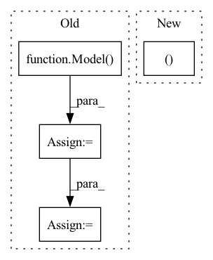

Pattern ID :39797
Before Change
// (821, 1110),
// (1110, 1447))
_model = Model(data_config=data_config,
nn_config=nn_config,
// intervals=total_intervals
)
_model.build_nn(method="simple_lstm") // "lstm_cnn", "simple_lstm", "dual_attention", "input_attention"
idx = np.arange(1600)
tr_idx, test_idx = train_test_split(idx, test_size=0.5, random_state=313)
history = _model.train_nn(indices=list(tr_idx))
return _model, tr_idx, test_idx
After Change
nbeats_options = {
"backcast_length": lookback,
"forecast_length": 1,
"stack_types": ("generic", "generic" ),
"nb_blocks_per_stack": 2,
"thetas_dim": (4, 4),
"share_weights_in_stack": True,In pattern: SUPERPATTERN
Frequency: 4
Non-data size: 4
Instances Fragment ID: 113350209
Project Name: atrcheema/ai4water
Commit Name: 77e61cc350ab3e4d5df9bd5e70fffdbe3a7d2445
Time: 2020-08-10
Author: ather_abbas786@yahoo.com
File Name: run_model.py
M Class Name: AnonimousClass
N Class Name: AnonimousClass
M Method Name: make_model(9)
N Method Name: make_model(9)
M Parent Class:
N Parent Class:
M File Name: run_model.py
N File Name: run_model.py
M Start Line: 62
M End Line: 89
N Start Line: 19
N End Line: 89
Before Change
def infer(filepath, SAVE_PATH, device_id):
model = Model( filepath, device_id)
print(model)
val_loader = EvalDataset(image_root="./data/NC4K/Imgs/",
gt_root="./data/NC4K/GT/",
testsize=352)
os.makedirs(SAVE_PATH, exist_ok=True)
for i in range(val_loader.size):
images, gt, name, _ = val_loader.load_data()
gt = np.asarray(gt, np.float32)
images = images.numpy()
imageTensor = Tensor(images)
imageTensor.to_device(device_id)
out = model.infer(imageTensor)
out = out[0]
out.to_host()
res = torch.from_numpy(np.array(out))
res = F.upsample(res, size=gt.shape, mode="bilinear", align_corners=False)
res = res.sigmoid().data.cpu().numpy().squeeze()
res = (res - res.min()) / (res.max() - res.min() + 1e-8)
print("--> save results: {}".format(SAVE_PATH+name))
imageio.imwrite(SAVE_PATH+name, res)After Change
res = mindspore.Tensor(res)
res = mindspore.ops.Sigmoid()(res)
res = mindspore.nn.ResizeBilinear()(res, (h, w ))
res = (res - res.min()) / (res.max() - res.min() + 1e-8)
res = res.asnumpy().squeeze()
imageio.imwrite(save_path+img_name.replace(".jpg", ".png"), res) Fragment ID: 113350177
Project Name: gewelsji/dgnet
Commit Name: f82c53433a67c0ed8d98385254a023d800a1335c
Time: 2022-11-18
Author: gepengai.ji@gmail.com
File Name: lib_ascend/inference_om.py
M Class Name: AnonimousClass
N Class Name: AnonimousClass
M Method Name: infer(4)
N Method Name: infer(3)
M Parent Class:
N Parent Class:
M File Name: lib_ascend/inference_om.py
N File Name: lib_ascend/inference_om.py
M Start Line: 41
M End Line: 63
N Start Line: 45
N End Line: 86
Before Change
logger.info(f"Initializing Model")
Model = getattr(models, args.model)
model = Model( numericalizer, args, context_embeddings, question_embeddings, decoder_embeddings)
model_dict = save_dict["model_state_dict"]
model.load_state_dict(model_dict)
server = Server(args, numericalizer, context_embeddings + question_embeddings + decoder_embeddings,
model, devices[0])
server.run()After Change
device = devices[0] // server only runs on a single device
Model = getattr(models, args.model)
model, _ = Model.from_pretrained(args.path,
model_checkpoint_file=args.checkpoint_name,
args=args,
device=device Fragment ID: 113350205
Project Name: stanford-oval/genienlp
Commit Name: af978f49e201bdf942e18839ec49f168273f38f9
Time: 2020-11-07
Author: s.j.semnani@gmail.com
File Name: genienlp/server.py
M Class Name: AnonimousClass
N Class Name: AnonimousClass
M Method Name: main(1)
N Method Name: main(1)
M Parent Class:
N Parent Class:
M File Name: genienlp/server.py
N File Name: genienlp/server.py
M Start Line: 168
M End Line: 185
N Start Line: 163
N End Line: 177